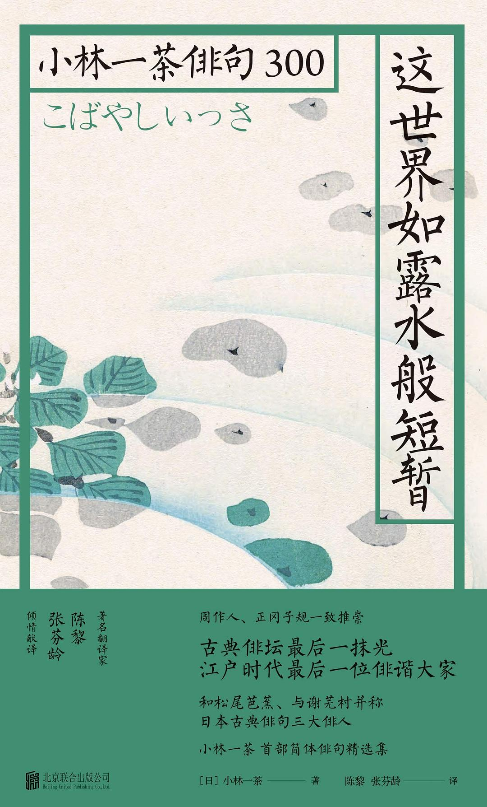

这世界如露水般短暂

总体观点
《这世界如露水般短暂》是日本江户时代与松尾芭蕉、与谢芜村齐名的‘俳句三大巨匠’之一小林一茶（Kobayashi Issa）的经典诗作全景译本。著名诗人陈黎与张芬龄精选其三百年间流传的近千首代表作，以典雅俏皮、极具中国现代白话诗韵味的译笔，让中国读者得以完整领略这位‘最接地气、最富平民温度’的俳谐宗师的灵魂全貌。
小林一茶的一生坎坷悲惨至极：幼年丧母饱受继母虐待、中年漂泊穷困潦倒、晚年所育四个子女与爱妻相继夭折病故，唯一的家园更被一场大火烧成灰烬。然而，正是这样一个饱受命运无情摧残的草根文人，笔下却没有丝毫自怨自艾的暴戾，反而对人间的麻雀、青蛙、苍蝇、跳蚤乃至春风露水怀有无比深沉的平视与同情。其名句‘我知这世界如露水般短暂，然而，然而……’道尽了人类面对无常生命时最坚韧、最悲悯的精神反抗。
核心观点
-
1. 这世界如露水般短暂然而然而：对虚无宿命的深情反抗
理智上完全明白尘世如朝露般瞬息即逝，但情感上依然无法割舍对亲人、对生命的无限依恋，在‘然而’的停顿中迸发绝大悲悯。
爱女小里因天花夭折，一茶抚尸痛哭写下千古名句：‘露水的世，虽然是露水的世，虽然是如此……（这世界如露水般短暂，然而，然而……）’ -
2. 万物平等平视：向卑微渺小昆虫投以圣洁仁爱之眼
打破人类中心主义的傲慢，把麻雀、跳蚤、苍蝇视作与自己同病相怜的世间受苦同伴，在微小生灵身上照见佛性。
名句：‘不要打哪，苍蝇搓他的手，搓他的脚呢’、‘瘦青蛙，别输掉，一茶在这里呢！’充满让人破涕为笑的草根温存。 -
3. 苦难中的自嘲与黑色幽默：用诙谐抵御贫困与饥寒
面对家徒四壁、四处漏风的悲惨现实，以近乎儿童般的狡黠幽默消解沉重，展现了平民老百姓最坚韧的乐天智慧。
冬夜草屋漏风，一茶写道：‘借着从破纸窗漏洞里照进来的月光，我今天夜里又省下了一文钱的灯油钱。’ -
4. 孤儿身世的童年创痛与对母亲的永恒寻找
早年失去母爱的创痛贯穿一生，使他在注视一切失去母亲的幼小动物时，都能感同身受地体会到那份无处安放的凄凉。
名句：‘没有母亲的小麻雀，过来跟我一起玩吧’，短短十几字，写尽了一个七十岁老人心中那个永远在哭泣的五岁孤儿。 -
5. 回归大地的大自在：在残破土仓中安详迎接永恒
在一场大火烧尽家宅后寄居在破漏土仓中，把寒风暴雪视作造物主的纯白寿衣，在极贫中安顿下最纯洁自足的灵魂。
绝笔之作：‘从洗澡盆里爬出来，又赤条条地爬进坟墓里，这趟人间走得真是滑稽透顶！’，通透达观震铄古今。
全书结构
-
第一卷 春之微物：瘦青蛙莫输与雪融泥土芬芳
收录初春时节的咏物俳句，聚焦残雪消融、嫩草发芽与小动物苏醒，洋溢着对微弱生命的鼓励与同理心。
‘雪融化了，漫山遍野满是小孩子’、‘来跟我玩吧，没有妈妈的小麻雀’，以极简汉字勾勒东方最动人的春之图景。 -
第二卷 夏之悲悯：乞求苍蝇莫打手与蝉鸣苦海
炎夏时节与蚊虫、跳蚤同居一室的滑稽日常，在苦热与骤雨中体察芸芸众生在欲海浮沉中的辛酸。
‘贪睡的小猫啊，翻个身，把肚子晒向初夏的太阳’，于慵懒琐碎中打捞生活最真实的无邪意趣。 -
第三卷 秋之露水：这世界如露水般短暂然而然而
一茶俳句艺术的最高峰，收录其痛失爱女、老父去世期间的断肠诗篇，悲喜交集达至哲学顿悟的极境。
精读《我知这世界如露水般短暂》全集，剖析‘露の世は 露の世ながら さりながら’的声韵美学与生命悲歌。 -
第四卷 冬之残烛：老母辞世与炉火边的落寞守岁
描写信州严冬暴雪、破旧草屋与壁炉残炭，展现孤苦老人在严寒中守卫微弱火种、向时间致敬的坚毅骨相。
‘今年除夕夜，借着漏风的纸窗，又跟屋里的小老鼠共度一年’，在凄苦中开出灿烂的幽默莲花。 -
第五卷 终局之悟：我知这世界本如朝露却依然深爱
一茶晚年绝笔与经典日记片段《我之春》，展现诗人在残破土仓中赤条条而来、赤条条而去的赤子完满升华。
全书终章：一茶在六十五岁雪夜辞世，只留下一堆手稿和一间漏风土仓，向整个人间留下了最纯洁无暇的慈悲遗产。